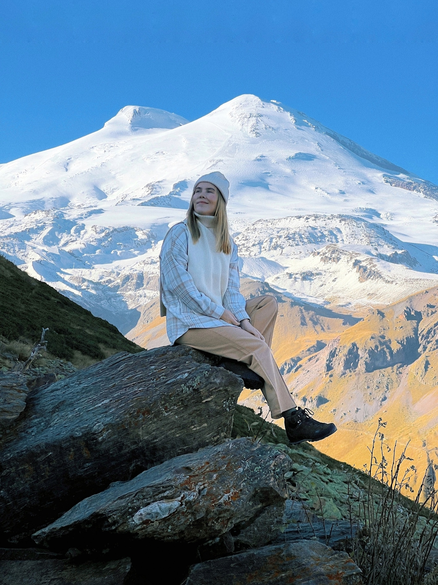

день 1
Знакомство с Приэльбрусьем
Прибытие в аэропорт Минеральные Воды до 12:00, трансфер до поляны Чегет по живописному Баксанскому ущелью. Заселение в отель с видом на горы, обед национальной кавказской кухней.
Знакомство друг с другом в формате интерактивного тренинга, где каждый сформулирует для себя личный запрос: с чем хочет работать эти дни.